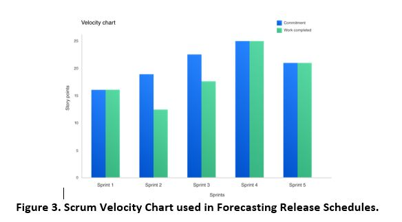

3 Applying Agile Methods and Mindset Within The Air Force
At the inception of a software-based project, the detailed software requirements may be unknown or unknowable, and even if the requirements are known, they usually experience significant changes as the development progresses. To address these evolving requirements issues, agile or iterative development promotes enhanced collaboration between program managers, requirements analysts, testers, the end-user community, and, of course, the software developers. This approach develops software iteratively in short cycles (called "sprints," "spirals," or "spins"), and involves frequent testing, user feedback, rapid deliveries, and adaptation to changing requirements. While traditional Waterfall software development was approached via rigorous preplanning to fully specify requirements before building an entire computer program application, Agile software development breaks the project down to provide iterative improvements which also adapt to the evolving environment. This allows government Program Managers to incorporate changed or new requirements in accordance with user needs, thus promoting modular IT contracting. This section focuses on how to incorporate Agile practices into the Air Force acquisition organizations, contracting and the PMO organizations to pro-actively enable an Agile development framework rather than have the framework adapt to a pre-defined waterfall based contracting approach. As this section is predominantly focused on the mindset shift, it will focus on presenting considerations versus prescribing a specific methodology.
3.1 Agile Contracting
Before jumping into the Agile development, PMOs should take time to consider how Agile can benefit their program,
what the issues will be, and if perhaps a hybrid approach (combination of Waterfall and Agile) is the best approach.
Some of the concepts that need to be considered when embarking on the use of Agile are discussed below. The discussion assumes the government
will be contracting with a firm to actually do the development. Since the contractor will be creating the Agile organization structure, it is
important the government understands the contractors' Agile organization and how the government interacts within that structure.
The better the understanding, the less likely there will be inadvertent roadblocks or obstacles created to impede the progress of the
Agile team(s). If the government is doing the development internally, some of the actions may differ and would be accomplished by the government.
The following establish some of the key variables which must be considered in the context of enabling an Agile development framework.
- Acquisition life cycle
- Team environment
- End-user access
- Training and coaching
- Oversight including milestone reviews, documentation, evaluation (metrics)
- Rewards and incentives
- Culture
These concepts were actual issues that programs deal with during their use of Agile methods. The concepts discussed here overlap and are intertwined. In many cases, the concepts are mutually reinforcing.
3.1.1 Acquisition Life Cycle
The acquisition life cycle consists of multiple phases: Materiel Solution Analysis, Technology Development, Engineering and Manufacturing Development, Production & Deployment and Operations & Support. Each of these phases presents unique challenges and opportunities. Some phases lend themselves to the use of Agile better than others. The PMO should determine how to best employ Agile in their program depending on their specific situation. The following paragraphs propose questions to ask and identify issues to consider in building an Agile program. If the PMO is doing a Request for Proposal (RFP), no matter which phase, ensure that the RFP contains language that allows the use of Agile. In many instances, the traditional RFP language makes it difficult, if not impossible, to propose an Agile-based solution. One consideration is the types of reviews and documents required. If the PMO wants to employ Agile, be prepared to allow for Agile style document development, i.e., incremental development of documents and data for reviews that result from the individual iterations and/or releases. This might not seem much different from what the traditional waterfall methods provide but consider the level of detail may be sparser using Agile in the earlier versions of the documents. Even final documents might not contain the amount of detail provided in traditional documents. The key here is not the volume, but the content. A necessary and sufficient criterion is that all important information required for operation and maintenance of the system are supplied.
3.1.2 Team Environment
Due to the size and complexity of most Air force programs, multiple agile iteration teams will be needed. The number is dependent upon the program and in some instances the locations of the contractor team. The larger the number of teams, the more complicated the communications and the greater the need for more users to be involved. In an ideal situation, each agile iteration team would have access to their own dedicated Product Owner. However, that is not practical in the DoD environment so alternatives need to be employed. PMO can consider the use of Product Owner proxies, rotating personnel every x weeks (x usually is two-four weeks), or perhaps a separate - team of subject matter experts (SMEs) accessible by the agile iteration teams as needed.
The structure of the overall program team-especially the contractor team-is dependent upon which Agile method is chosen. Agile Scrum, Kanban and XP are just three examples of management practices within Agile methods. Typically, the contractor determines the flavor of Agile. However, the government PMO team needs to be responsive and supportive of that method. Otherwise, using Agile will have less than optimal results. The Agile team also must exhibit behavior reflecting the approach. Seven Extreme Programming (XP) engineering practices have been observed to scale up to enterprise-level Agile development projects and will serve as a foundation for the discussion of Agile contractin
The Define/Build/Test Component. Three basic workflows are combined in the component team: define, build, and test, operating cooperatively within a pre-defined period, known as a time box. The juxtaposition of these skill sets into one team tends to run counter to some conventional methods employed in DoD programs, where these players are often separated by intent.
Two-Level Planning. Two-level planning is portrayed as providing both guidance of how software is to be inserted into the operational environment as well as allowing some flexibility to accommodate what is learned during development: The top level of the planning cycle is termed release level planning. This cycle of planning defines series of releases that broadly define capability to be contained in each release. This could be done at the feature set level. The second level of the planning cycle is termed iteration or flow level planning, where work is made ready for development within either a time-boxed iteration or rhythmic workflow approach.
Mastering the flow / Iteration. The ability of a team to reliably execute a process flow (Kanban) or sequence of iterations (Scrum / XP) may well be the key behavior that distinguishes a team capable of exploiting Agile techniques in a large organization. If this capability is not present, the likelihood of success is minimal at best. The development iteration or workflow consists of the following key activities: creation of complete, tested, working code implementing a set of features and integration of the developed code into the working baseline. The result is potentially releasable to the user.
Producing Smaller and More Frequent Releases. One goal of an agile development framework is the desire for more frequent feedback from the customer and/or stakeholders to avoid large-scale course corrections. The shorter duration of iterations or workflow lead time will help to maintain more or less continuous feedback from the customer.
Concurrent Testing. Concurrent testing practices are based upon thorough testing of code both during development and during integration. The goal is that all code is tested. One primary methodology for this is the application of a Test-Driven-Development Approach where the unit tests for software are created prior to the actual code development.
DevOps Continuous Integration (CI)/Continuous Delivery (CD) Pipelines. DevOps CI/CD pipelines may well be the most useful and controversial practice advocated in the Agile community. The DevOps CI/CD model diverges from the usual V-shaped model advocated by traditional systems engineering practice employed in DoD programs. In the V-shaped model, requirements synthesis, allocation, and development are carried out in a top-down fashion. This is followed by a bottom-up sequence of integration and verification activities, leading to a product ready for production.
DevOps CI/CD pipeline processes are contingent upon the ability to concurrently execute two crucial activities: (1) collect incremental changes from multiple developers on a regular basis, ideally on a daily basis on code check-in, and (2) perform the nightly build discipline, where all changes are brought together in an incremental software baseline, which is in turn compiled and tested with the available automated unit, security, functional and regression test tools.
Regular Reflection and Adaptation. Reflection and adaptation (called the Retrospective in Scrum) is the Agile version of continuous process improvement that is highlighted in other quality practices such as CMMI-DEV processes. In keeping with the bottom-up discipline of Agile approaches, this introspection is driven down to the individual team level.
3.1.3 Contracting Consideration Checklist
- Procure the repeatable process for the delivery of functional products
- Contractual Requirements should be the scope, period of performance, and price. The technical execution of the project should be at the discretion of the Product Owner
- Enhancement and fixes should be owned by the same team
-
Contract Types:
- Fixed Price per iteration is good for the procurement of the process for an entire team but the current DoD acquisition process does not support short-term contract changes
- Time and Materials is ideal for the procurement of time of required skill sets but the risk is entirely on the government
-
A preferred type which enables agile development is a "Rent the Factory" type contract:
- Establish contract to resource ("rent") a team for a specified time period from a contractor
- Control change through PMO management of the Product Backlog
- Implement within contract incremental options for extension to decrease government risk (off-ramp for lack of performance)
- Provide reward incentives for excellence in performance
3.2 Agile Organization, Roles, and Responsibilities - Stakeholder Level
One addition to the typical traditional Air Force PMO organization is an Agile Coach. As described in the previous training and coaching section, the Agile Coach is someone who can provide real-time answers for the immediate Agile issue. Another addition to the typical PMO staff is an end-user representative, the PO, who is empowered to work with the contractors' agile development team and make decisions that are binding for the development. Given the nature of government contracting, care must be taken to ensure that the PO user representative has the legal authority to direct the contractor. We can envision a situation where constructive change could become an issue. Another addition to the PMO is a DevSecOps Lead who works with the with contractor engineering support teams that may be divided into two segments: Continuous Integration Team and Continuous Delivery/Deployment Team to implement configuration management, version control, automated build, automated security testing, automated functional testing and regression testing.
The government needs skilled Agile personnel to review the documentation and understand how the Agile software development approach works. Many traditional PMO teams do not have software representatives experienced with modern software development approaches. That could be more problematic in an Agile environment, where any shortfalls quickly become more visible.
Another challenge is keeping high-performing Agile teams together long enough for them to achieve peak performance. This is a challenge because developers can change at the end of a contractual period of performance. The continuity of an Agile team enhances the tacit knowledge of the program and this improves overall performance. One recommendation might be to look at is putting key Agile technical leads into the PMO under a separate contract vehicle or hire them to work for the government PMO organization itself.
3.2.1 Stakeholder Consideration Checklist:
- Empower the Product Owner to make technical decisions
- Provide regular feedback to stakeholders demonstrating progress
- Maintain a short feedback loop with users
- Align with external organizations
- Testing
- Configuration
3.3 Project Management
This section describes how project management practices need to be adjusted in support of Agile projects by first identifying common Agile practices and then describing how these management practices work in terms of scope, schedule and cost baselines for the project work.
3.3.1 Planning
An integrated project management plan (PMP) is developed for the Agile project to define the basis of all project work and how the work will be performed.
It describes how the project will be executed, monitored, control and closed. From the Agile perspective, the performance measurement baseline is an
integrated scope, schedule, and cost baseline for the software release project work maintained in the Product Backlog against which project execution
metrics are used to measure and manage performance. The PMP describes the series of phases (themes, initiatives, and epics) the project passes through
from initiation to closure. The PMP also describes the Agile development management approach; i.e. Agile iteration-based (Scrum/XP), flow-based (Kanban)
or a hybrid model. Figure 1 describes the hierarchal structure of the Agile project work effort. Notice that this view of the project work hierarchy is
similar to the WBS in predictive (Waterfall) projects.

One additional consideration is that the above hierarchy promotes a multi-team or "scaled" agile approach. While methodologies exist to support the scaling of agile (i.e. Scaled Agile Framework (SAFe), Scrum of Scrums, Disciplined Agile Delivery (DAD), etc), these will not be presented in this playbook but are a topic for further elaboration as an organization's agile process matures.
3.3.2 Scope
In Agile projects the requirements are defined by the organization's stakeholders and Product Owner with support from the Agile Team in the form of Epics, Features, user stories or PBIs that are maintained in the Product Backlog. Therefore, the project scope for an Agile project begins with the organization's governance process which commonly consists of a Configuration Control Board (CCB) that produces a high-level product backlog for a release consisting of a list of approved requirements defined in the form of epics, features and sometimes high-level PBIs.
The product owner then works with the Agile Inception Team to prioritize these items (epics, features, PBIs if applicable). The PMO can initially use the MoSCoW (Must Have, Should Have, Could Have, Won't Have this time) method to prioritize requirements.
3.3.3 Forecasting Schedule and Cost
Once the user stories and PBIs in the product backlog are defined, prioritized and the MVP determined, Agile estimating techniques can be applied to estimate the effort for each feature, sum up the effort for all the features in a project as well as determine which features would be part of which release. The PMO and development team are then able to forecast a schedule and cost for the release project. There are several gross-level estimation techniques used by teams using agile approaches such as Scrum, Kanban, and eXtreme Programming which include T-shirt Sizes (for Features), and Affinity Mapping.
T-Shirt Sizes. This estimation technique can be applied when providing a quick and rough estimation to a project feature. Here, the features are estimated in T-shirt sizes, ranging from XS to XL, which would be later converted to numbers, as per requirements. In this type of estimation, the estimators assign a size to each of the features. Points are assigned to the each of the T-Shirt Sizes using the Fibonacci-like format: 0, 1, 2, 3, 5, 8, 13, 20, 40, 100. These points are summed up and based on a rough estimate of how many feature points can get done within a time period by a normal agile team (note, the more detailed the refinement, the better the estimates).
3.3.4 Cost
The cost for the release is estimated by using the team's iteration average cost and multiplying it by the number of iterations estimated to complete the backlog. For example, the following formula to determine budgeted cost can demonstrate this estimation for the above example: (Team monthly cost (example: $15,000.00 per month) multiplied by the number of months/iterations (example: 5 months) = $75,000.00 + other expenses = forecast budgeted cost.
The above example is utterly simplistic and does not take into account the following factors:
- The Inception phase at the beginning that is required to develop the product backlog, estimate the size in story points and develop an architecture vision;
- Changes in scope during the Construction iterations caused by adding new features driven by urgent business needs or Cybersecurity issues;
- A Transition phase at the end of development for Government Acceptance Tests and Security Tests required to achieve customer acceptance and Authority to Operate (AtO) for deployment;
- Many other variables such as Cloud Migration and implementation of a DevSecOps reference model.
3.3.5 Project Management Consideration Checklist
- The project manager removes ensures funding, organizes stakeholder interactions and keeps the team from being distracted
- Work in increments. Buy, build, and fail small. Make proceed and pivot decisions regularly. Learn from mistakes but don't punish the people
- Leverage the efficiency of commercial contracting methods. If and when possible, use services and tools sold by private sector vendors.
- Use living roadmaps not fixed Integrated master schedules
3.4 Agile CDRLs and delivery
3.4.1 Overview
One of the four agile manifesto values is that "working products are valued over comprehensive documentation". Many times this is viewed by the agile purist as a justification for not doing documentation. However, even in agile, there is a value for doing documentation. Documentation exists to support the development teams work in creating the product and supporting the product after release. Prior to looking deeper at agile content and delivery recommendations for CDRLs, here are some general considerations to keep in mind when determining the format, content, and delivery schedule for CDRLs within an agile framework -
-
"Just in time"
a. Document late (based on design completion) - Consolidate deliverable design documentation as late as possible(though can be iteratively updated) - better to have the stable concepts versus speculative ideas which are constantly changing as part of the agile framework and would require constant document revisions and submissions.
b. Document continuously (based on iteration) - iteratively update development related documentation (i.e. user guides) in parallel with development efforts to not lose critical ideas. A key concept here is the idea of a living document, which is discussed below. -
"Just sufficient" - Sufficiency is defined by the document owner (provide the necessary useful documentation elements). Additional thoughts:
a. Provide the fewest CDRLs possible with the least amount of overlap (I.e. considering combining the Interface Requirements Specification (IRS) with the Interface Design Description IDD).
b. Better communication means less documentation (collaboration is key to agile - often a conversation between engineers can eliminate the need for a staffing document).
c. Working software does not eliminate the need for documentation - the software delivered still needs to be improved, operated and maintained in the future - documentation's value is transferring product knowledge gained in development to users, operators and maintainers or to new development personnel when contracts change.
-
"NOT Just Because" - Treat documentation as any other requirement that needs to be justified by the government document owner (since resources will need to be allocated to produce it). Documentation work efforts can then be prioritized within the product backlog based on the value it provides.
3.4.2 Agile CDRL Content Considerations
Agile is built to be fast and flexible, and the contents of the CDRLs must be able to keep up with this development framework. CDRLs should not be an after-thought - they must be incorporated into the process. In other words, we don't want big CDRLs that are out of date by the time they are published. We need documents which can be frequently updated based on the ongoing iterative development efforts. Updates for CDRLs should be provided incrementally by the team when it is fresh in their mind, versus producing documentation at the end of the release when much of the valuable information has already been forgotten. In the military, this is a mindset switch.
3.4.3 Agile CDRL Delivery Consideration
In order to maintain the current value of CDRLs, these documents should be flexible enough to keep up with an iterative update approach
(versus long periods of time between updates). In that case, the best methodology is to establish a system to enable CDRLs as "living documents".
This can best be enabled by re-thinking the methodology of delivery for CDRLs. By considering alternate digital delivery methodologies, CDRLs can be
more quickly updated and maintain their relevance throughout the agile development process.
One final note to this section is while Sharepoint or a shared drive may fulfill the CDRL requirements above, a further shift from the
traditional mindset is to provide appropriate dashboards or reports within an existing system to provide the CDRL information requirements.
An example of this is the Test Descriptions / Scripts. Executable test cases are normally already stored in a digital format within the test management software.
3.4.4 CDRL Recommended Modifications Attachment
The following link is to an attachment which provides a more detailed list of CDRLs normally associated with a software development project.
The list contains the associated DID, waterfall description, agile recommended modifications, and normal delivery timelines
(i.e. are the documents delivered one time for the project, at specified design reviews, with a delivery, or on an as needed basis.
3.5 Measuring Agile Delivery, KPIs, and Metrics - Status Reporting
In Agile, the system always runs, thus Agile metrics are empirical and business value-based measurements instead of predictive measurements such as the performance measurement baseline and earned value that are used in traditional Waterfall. Agile metrics measure what the Agile Team delivers, not what the team predicts it will deliver. Project teams use this data for improved schedule and cost forecasts as well as for surfacing problems and issues that the Agile Team can diagnose and address.
The metrics described below address Team Metrics, Program Metrics and Portfolio Metrics. These metrics were derived from the Project Management Institute, Inc. Agile Practice Guide, SAFe Metrics, DAD, and Atlassian web sites.
3.5.1 Team Iteration Metrics
The Agile team metrics discussed below focus on the delivery of software. Whether the project team is a Scrum or Kanban team, each of these agile metrics will help the team better understand their development process, making releasing software easier.
Scrum Metrics
Sprint burndown. Scrum teams organize development into time-boxed sprint iterations. At the outset of the sprint, the team forecasts how many story points they can finish during a sprint. A sprint burndown report (Figure 2) then tracks the completion of work during the sprint. The x-axis represents time, and the y-axis refers to the amount of story points left to complete. The goal is to have all the forecasted work completed by the end of the sprint.

A team that consistently meets its forecast is a compelling advertisement for Agile in their organization, however, it may be too good to be true if the team is inflating the numbers by declaring an item complete before it really is. In the long run cheating hampers learning and improvement.
There are several anti-patterns to watch for in team performance:
- The team finishes early sprint after sprint because they aren't committing to enough work in the sprint backlog.
- The team misses their forecast sprint after sprint because they're committing to too much work.
- The burndown line makes steep drops rather than a more gradual burndown because the work hasn't been broken down into granular user stories or PBIs.
- The product owner adds PBIs or changes the scope mid-sprint.
Velocity Velocity is the average amount of work a Scrum team completes during a sprint, measured in story points and we used it in the example from the prior section to forecast a release schedule. The product owner can use velocity to predict how quickly a team can work through the product backlog, since the velocity chart report tracks the forecasted and completed work over several iteration-the more iterations, the more accurate the forecast.

Each team's velocity is unique. If team A has a velocity of 25 story points and team B has a velocity of 50 story points, it doesn't mean that team B has higher throughput. Because each team's story point estimation technique is unique, their sprint velocity will be as well. Organizations should resist the temptation to compare velocity across teams. Instead, Program Management should measure the level of effort and output of work based on each team's unique interpretation of story points.
Kanban Metrics
Team Kanban Board Flow-based Agile Teams using Kanban methods and Kanban Boards need to use different measurements like work in progress, lead time for delivery of a feature to customer, cycle time for completion of a task on the Kanban Board, and response time - the amount of time the item waits until work begins. Figure 4 shows an example of an Agile team's initial Kanban board, which captures their current workflow states: analyze, review, build, and integrate and test.

After defining the initial process and Work in Process (WIP) limits and executing for a while, the Kanban team's bottlenecks should surface. If this is the case, the Kanban Team refines the workflow process step where the bottleneck occurred or reduces some WIP limits until it becomes evident that a workflow state is 'starving' or is too full. In this manner the Kanban Team continually adjusts the process workflows to optimize their flow. For example, changing WIP limits and merging, splitting, or redefining workflow states.
Cumulative Flow Diagram The cumulative flow diagram is a key resource for Kanban teams, helping them ensure the flow of work across the team is consistent. With number of issues on the Y axis, time on the X axis, and colors to indicate the various workflow states, it visually points out shortages and bottlenecks and works in conjunction with Work in Process (WIP) limits.

The cumulative flow diagram should look smooth(ish) from left to right. Bubbles or gaps in any one color indicate shortages and bottlenecks, so when the Agile Team sees one, they should look for ways to smooth out color bands across the chart. Anti-patterns to look for are:
- Blocking issues create large backups in some parts of the process and starvation in others.
- Unchecked backlog growth over time. This results from product owners not closing issues that are obsolete or simply too low in priority to ever be pulled in.